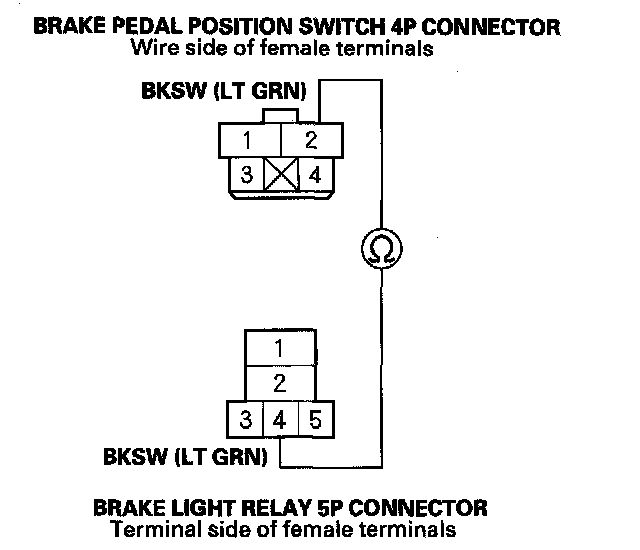

DTC 69
DTC 69: BRKDIAG Low1. Turn the ignition switch ON (II).
2. Clear the DTC with the HDS.
3. Turn the ignition switch OFF, then turn it ON (II) again.
4. After the VSA indicator goes off, press the brake pedal for 3 seconds or more.
5. Check for DTCs with the HDS.
Is DTC 69 indicated?
YES-Go to step 6.
NO-Go to step 19.
6. Turn the ignition switch OFF.
7. Remove the brake light relay.
8. Disconnect the brake pedal position switch V connector.
9. Check for continuity between the brake pedal position switch 4P connector terminal No. 2 and the brake light relay 5P connector No. 4.

Is there continuity?
YES-Go to step 10.
NO-Repair open in the wire between the brake pedal position switch and the brake light relay.
10. Disconnect the VSA modulator-control unit 46P connector.
11. Check for continuity between the VSA modulator control unit 46P connector terminal No. 6 and the brake light relay 5P connector No. 1.
Is there continuity?
YES-Go to step 12.
NO-Repair open in the wire between the VSA modulator-control unit and the brake light relay.
12. Substitute a known-good brake light relay.
13. Connect the VSA modulator-control unit 46P connector.
14. Turn the ignition switch ON (II).
15. Clear the DTC with the HDS.
16. Turn the ignition switch OFF, then turn it ON (II) again.
17. After the VSA indicator goes off, press the brake pedal for 3 seconds or more.
18. Check for DTCs with the HDS.
Is DTC 69 indicated?
YES-Check for loose terminals in the VSA modulator-control unit 46P connector. Check for a loose connection at G303. If necessary, substitute a known-good VSA modulator-control unit and retest.
NO-Replace the original brake light relay
19. Turn the ignition switch OFF.
20. Remove the brake light relay.
21. Disconnect the VSA modulator-control unit 46P connector.
22. Turn the ignition switch ON (II).
23. Connect the VSA modulator-control unit 46P connector terminal No. 37 to body ground with a jumper wire.
24. Check the brake lights without pressing the brake pedal.
Are the brake lights on?
YES-Go to step 25.
NO-Go to step 29.
25. Turn the ignition switch OFF.
26. Check for continuity between the VSA modulator control unit 46P connector terminal No. 37 and the brake light relay 5P connector No. 3.

Is there continuity?
YES-Go to step 27.
NO-Repair open in the wire between the VSA modulator-control unit and the brake light relay.
27. Turn the ignition switch ON (II).
28. Measure the voltage between brake light relay 5P connector terminal No. 5 and body ground.
Is there battery voltage?
YES-Replace the brake light relay.
NO-Repair open in the wire between the No. 20 (7.5 A) fuse in the under-dash fuse/relay box and the brake light relay.
29. Turn the ignition switch OFF.
30. Check for continuity between the VSA modulator control unit 46P connector terminal No. 6 and the brake light relay 5P connector No. 1.
Is there continuity?
YES-Check for loose terminals in the VSA modulator-control unit 46P connector. Check for a loose connection at G303. If necessary, substitute a known-good VSA modulator-control unit and retest.
NO-Repair open in the wire between the VSA modulator-control unit and the brake light relay.